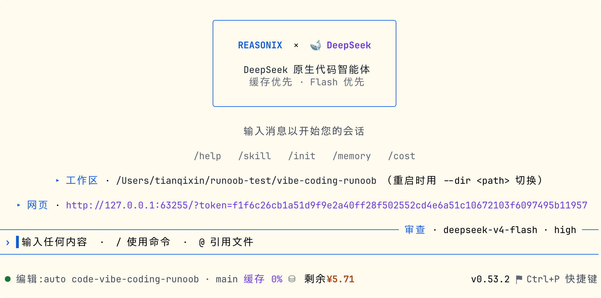
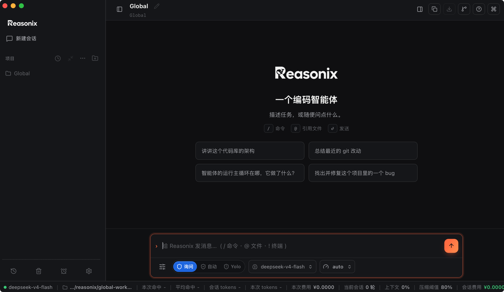

Reasonix入門チュートリアル
Reasonixは、DeepSeek向けに深く最適化されたオープンソースのターミナルAIプログラミングエージェントです。実行ループ全体はDeepSeekのprefix-cacheメカニズムを中心にゼロから設計されており、AIプログラミングを十分に安価にして、常時稼働させ続けることを目指しています。
Reasonixの設計哲学："A coding agent that stays cheap enough to leave on."（十分に安価で、常時稼働させ続けられるプログラミングエージェント）。

誰向け？
| シナリオ | 説明 |
|---|---|
| DeepSeekを主力としてプログラミングタスクに使用 | DeepSeek APIに深く適合し、キャッシュヒット率が汎用ツールをはるかに上回る |
| AI使用コストを重視 | 費用を正確に制御し、予算上限とリアルタイムの費用統計をサポート |
| ターミナルワークフローを好む | ターミナルファースト設計、diffはgit diffにあり、ファイルツリーはlsにある |
| 長時間連続でAgentを実行 | 大規模コードベースの分析、バッチリファクタリングなどのシナリオに理想的な選択肢 |
Reasonixがやらないこと
Reasonixは意図的に選択を行っています。以下は意図的にやらないことです：
| やらないこと | 理由 |
|---|---|
| マルチプロバイダーの柔軟な切り替え | DeepSeek専用、これは制限ではなく設計です |
| IDE統合 | ターミナル優先であり、IDEプラグインは追求しない |
| 最も難しい推論ベンチマーク | Claude Opusは一部のベンチマークで依然としてリードしており、PhD証明問題を解くならClaudeから始める |
| オフライン/完全無料 | 有料のDeepSeek API Keyが必要。オフラインソリューションはAider + Ollamaを参照 |
Reasonixを使用する前にDeepSeek API Keyを取得する必要があります。アクセス：platform.deepseek.com/api_keys、ログインまたはアカウント登録をします。

クリックAPIキーを作成、名前を付け（例：reasonix）、コピーして保存します。
初回実行reasonix時にAPI Keyの貼り付けを求められ、入力すると自動的に永続化され、以降は再入力する必要はありません。
インストール：CLIとデスクトップ版
ReasonixはCLIとデスクトップ版の2つのインストール方法を提供しています。以下でそれぞれ説明します。
CLIインストール
システム要件：Node.js ≥ 22、macOS、Linux、Windows（PowerShell、Git Bash、Windows Terminal）をサポート。
グローバルインストール（日常使用に推奨）：
npm install -g reasonix
インストール不要で試す（npx、常に最新版を使用）：
# 进入项目目录，直接使用 npx 运行 cd my-project npx reasonix code
検証とヘルスチェック、バージョン番号の確認：
reasonix --version
ヘルスチェック：Nodeバージョン、API Keyの到達可能性、MCP設定：
reasonix doctor
最新版へのアップグレード：
reasonix update
対話式ウィザードで設定を完了し、API Key、言語、テーマなどの設定を初期化します。
reasonix setup
言語を選択：

テーマを選択：

DeepSeek APIキーを入力：

Enterキーで保存：

次にプロジェクトvibe-coding-runoobに入ると、使用を開始できます。
cd vibe-coding-runoob
以下のコマンドを入力して使用を開始します：
reasonix

入力/サポートされているコマンドを表示：

デスクトップ版インストール
デスクトップ版はTauriベースのネイティブクライアントで、マルチタブ対応、右側パネルにAgentが今回のセッションで読み取りまたは編集したファイルを表示します。
下部にはCLIの上部バーと同じ費用/キャッシュ/Tokenカウンターが表示されます。同じDeepSeek API Keyと~/.reasonix設定を使用します。
デスクトップ版にはNodeランタイムが内蔵されており、個別のnpm installは不要です。
公式サイト（https://reasonix.io/#start）から対応プラットフォームのインストールパッケージをダウンロード：

| プラットフォーム | ファイル形式 |
|---|---|
| macOS | Reasonix_x.x.x_universal.dmg |
| Windows | Reasonix_x.x.x_x64-setup.exe |
| Linux | Reasonix_x.x.x_amd64.AppImage または .deb |
ダウンロード後、ダブルクリックでインストールし、API Keyを入力します：

起動後、デスクトップもクラシックな左右レイアウトです：

入力ボックスに情報を入力すると、会話を開始できます：

右上隅のアイコンをクリックすると、3カラムレイアウトを開くことができます：

3つのコラボレーション方法：

テーマ、外観、言語、プラグイン、MCPなどを含む一般設定：

初回起動時の注意事項：
macOSでは初回起動時にGatekeeperのブロックが発生します。一度だけ解除するには、ターミナルで xattr -dr com.apple.quarantine /Applications/Reasonix.app を実行するか、右クリック → 開く → 確認を選択します。
Windows：SmartScreenに「不明な発行元」と表示されたら、「詳細情報 → それでも実行」をクリックします。Linux：.debと.AppImageは直接実行でき、追加の手順は不要です。
デスクトップ版は現在Prerelease状態です。ループとプロトコルはCLIと完全に同じですが、UIはまだ改良中であり、インストールパッケージはまだコード署名されていません。CLIが主要な開発インターフェースであり、CLIにある機能はデスクトップ版の入力ボックスでもすべて使用できます。
初回実行
プロジェクトディレクトリに入り、Reasonixのプログラミングモードを起動します。
cd your-project # 启动编程模式（以下两种方式等价） reasonix code # 或者直接 reasonix
最初のメッセージを送信してみてください：
分析这个项目的目录结构，告诉我主要模块的职责
Reasonixはlist_directory、read_fileなどのツールを呼び出してプロジェクトをスキャンし、構造化された分析を出力します。
ヘッドレス実行（パイプフレンドリー）
# 单次执行，结果流式输出到 stdout reasonix run "统计 src 目录中每个 .ts 文件的行数，按从多到少排序" # 结合 git diff 使用 git diff HEAD~1 | reasonix run "给这段 diff 写一个 Conventional Commits 格式的 commit message"
2つのモード：codeとchat
Reasonixは2つの実行モードを提供しており、さまざまな使用シナリオに適しています。
| 能力 | code | chat |
|---|---|---|
| ファイルシステムツール + edit_file | ✓ | — |
| SEARCH/REPLACE → /apply 審査 | ✓ | — |
| Shell ツール（権限で制御） | ✓ | — |
| Plan モード、/todo、/skill new、/mcp add | ✓ | — |
| メモリ（remember / recall_memory） | プロジェクトレベル + グローバル | グローバルのみ |
| MCP サーバー、ウェブ検索、ask_choice | ✓ | ✓ |
| セッションスコープ | ディレクトリごとに分離 | 共有デフォルト |
code はデフォルトモードであり、ファイルシステムと shell ツールを持つ唯一のモードです。ここから始めます。
chat はより軽量なディスクアクセスなしモードです。思考のパートナーが必要だが AI にファイルを触らせたくない場合や、MCP をマウントして情報検索をする場合に使います。
chat モードはシステムプロンプトが短く、トークンコストが低くなります。
Reasonix はファイルシステムツールのスコープを起動ディレクトリにバインドし、--dir でリダイレクトします。途中でのディレクトリ切り替えはサポートされていません（メモリパスが古いルートパスと混在してしまいます）。終了後に再起動してください。
# 在指定目录下启动 code 模式 reasonix code --dir /path/to/other-project
編集ゲート：SEARCH/REPLACEプレビューフロー
これは Reasonix で最も重要な安全機構です。AI があなたの知らないうちにファイルを変更することは決してありません。
3つの編集ゲートモード
/mode または Shift+Tab で切り替えます:
| モード | 動作 |
|---|---|
| review | 編集のたびにプレビューを表示し、y/n でチャンクごとに確認 |
| auto（AUTO） | 自動適用するが、5秒以内に u を押して元に戻せる |
| yolo | 直接ディスクに書き込み、確認なし |
典型的な編集フロー（reviewモード）
1. 你：帮我把 getUserById 函数加上错误处理
2. Reasonix 分析代码，提出 SEARCH/REPLACE 修改方案：
─── src/services/user.ts ───
- async function getUserById(id: string) {
- const user = await db.users.findOne({ id });
- return user;
- }
+ async function getUserById(id: string): Promise<User | null> {
+ try {
+ const user = await db.users.findOne({ id });
+ return user ?? null;
+ } catch (error) {
+ logger.error({ id, error }, 'getUserById failed');
+ throw new AppError('USER_FETCH_FAILED', 500);
+ }
+ }
3. 你：/apply ← 确认应用，文件写盘
/discard ← 丢弃不应用
/walk ← 逐块 git-add-p 风格审查
編集履歴
# 列出本次会话的所有编辑批次 /history # 查看某次编辑的 diff /show <id> # 回滚最近一次 /apply /undo
Planモード：読み取り専用分析ゲート
Plan モードは Reasonix を読み取り専用状態にします。AI はファイルの読み取り、コードの分析、提案のみが可能で、あなたが明示的に計画を承認するまでファイルの書き込みやコマンド実行はできません。
有効化とワークフロー
/plan ← 切换 Plan 模式（顶栏出现 PLAN MODE 标记） 你：我想把这个 Express 应用迁移到 Fastify，先给我分析影响范围 AI 分析后提交计划： ✓ 需要替换 5 个路由文件 ✓ 3 个中间件需要适配 ✓ 12 个测试需要更新 预计改动：43 个文件，约 800 行 plan-confirm 模态框出现 → Ctrl+P 展开/折叠完整计划详情 → 批准后 AI 进入执行模式 → 执行过程中每次修改仍走编辑门控
いつPlanモードを使うか
| シナリオ | 説明 |
|---|---|
| 大規模な変更 | タスクが5つ以上のファイルに影響する場合 |
| アーキテクチャ変更 | フレームワーク移行、データベース切り替え、API 再設計 |
| チームコラボレーション | 計画をすり合わせる必要があるシナリオ |
| 範囲が不確実な場合 | AI がどこを変更するかを先にプレビューしたい場合 |
モデルとコスト管理
Reasonix は柔軟なモデル切り替えとコスト管理メカニズムを提供します。
プリセットの切り替え
# 默认 smart（v4-flash + max 推理） reasonix code # 快速任务，v4-flash + high 推理，成本最低 reasonix code --preset fast # 复杂任务，v4-pro + max 推理 reasonix code --preset max
セッション中に切り替え:
/preset auto # 开启自动升级逻辑（flash 优先，失败升级 pro） /preset flash # 锁定 flash /preset pro # 锁定 pro
/pro 単回アップグレード
ユーザーが /pro を入力すると、次のターンは v4-pro を使用し、その後自動的に解除されます。プリセット切り替えも、戻し忘れもありません。
アクティブ状態はトップバーの黄色い "pro armed" マーカーとして表示されます。
> /pro > 解释这段 Rust 异步代码里的生命周期标注为什么必须这样写 # 回答完成后自动恢复 v4-flash
失敗時の自動アップグレード
毎ターン計数される「flash では不十分」イベント: edit_file/write_file の SEARCH-not-found エラー、および ToolCallRepair の発動。
計数が3に達すると、現在のターンの残りは自動的に v4-pro に切り替わり、黄色い警告行で通知されます。黙ってコストがかかることはありません。
セッション予算上限の設定
# 本次会话上限 $0.50 reasonix code --budget 0.50
/budget 0.20 # 会话中设置 $0.20 上限 /budget off # 取消上限
80% に達すると警告し、100% に達すると次のターンを拒否します。
コンテキスト圧縮と料金照会
/compact # 手动将旧轮次折叠为摘要（缓存安全）
# 上下文达到 50% 时自动触发，这是手动触发
/cost # 上一轮花费
/cost 这段文字 # 预估发送这段文字的成本
/stats # 跨会话成本仪表板（今天/本周/本月/所有时间）
スキル（Skills）：Markdownで再利用可能なスクリプト
スキルとは、AI が必要に応じて呼び出せる Markdown スクリプトです。リモートレジストリはなく、直接作成してすぐに有効になります。
スキルの作成
# 项目级技能：<project>/.reasonix/skills/code-review.md /skill new code-review # 全局技能：~/.reasonix/skills/deploy-check.md /skill new deploy-check --global
スキルファイル形式
ファイルパス: .reasonix/skills/code-review.md
--- description: 对当前改动做系统性代码审查，按 P0-P3 优先级分级 runAs: subagent tools: [read_file, list_directory, search_content] --- 分析 `git diff HEAD` 中的所有改动。 对每个发现的问题，按如下格式输出： **[P0]** 严重（阻止合并）：安全漏洞、逻辑错误、数据丢失风险 **[P1]** 重要（强烈建议修复）：性能问题、错误处理缺失 **[P2]** 一般（建议修复）：代码质量、可读性 **[P3]** 改进（可选）：最佳实践、未来优化 每条包含：文件名和行号 · 问题描述（一句话）· 修复建议。 最后给出总体评估：是否可以合并，以及最重要的三个改进点。
runAs: subagent にすると、スキルは分離されたサブエージェントループで実行され、メインセッションのコンテキストが肥大化しません。
呼び出しと管理
/skill code-review # 调用技能 /skill list # 列出所有可用技能 /skill show code-review # 查看技能内容
Claude形式のスキルとの互換性
<project>/.claude/skills/<name>/SKILL.md と ~/.claude/skills/ も自動的に読み込まれます。
Reasonix のネイティブパスと共存するため、Claude 形式のスキルを出力するツールをそのまま使用できます。
# 写入 .claude/skills/openspec-*/SKILL.md npx openspec init --tools claude # 在 Reasonix 中直接调用 /skill openspec-propose <task>
メモリ（Memory）：セッションをまたぐコンテキストの永続化
Reasonix には4種類のメモリタイプがあり、セッションをまたいでコンテキストを保持します。
| タイプ | スコープ | 用途 |
|---|---|---|
| user | グローバル | あなたの好み、作業習慣 |
| feedback | グローバル | AI の失敗や成功の経験 |
| project | プロジェクトレベル | プロジェクトの規約、アーキテクチャ決定 |
| reference | 設定可能 | 固定参照資料 |
手動書き込み
/remember 这个项目用 pnpm 而不是 npm /remember 所有 API 错误统一走 AppError 类，不要 throw 原生 Error /remember Turso 批量写入并发时需要加锁，见 src/db/mutex.ts
メモリの管理
/memory list # 查看所有记忆 /memory show <id> # 查看某条记忆详情 /memory forget <id> # 删除某条记忆 /memory clear # 清空所有记忆
プロジェクトメモリファイル（REASONIX.md）
プロジェクトルートに REASONIX.md を作成すると、各セッションの開始時に自動的に読み込まれます。
# 扫描项目，自动生成 REASONIX.md 基线 /init # 强制重新生成（覆盖已有文件） /init force
または手動で作成:
# 项目：runoob-backend ## 技术栈 - Runtime：Bun 1.2（禁止使用 Node.js 专属 API） - 框架：Hono - 数据库：Turso（libSQL） ## 编码规范 - 所有函数必须有 JSDoc 类型注解 - 错误统一用 AppError 类 - 禁止 any 类型 ## 已知陷阱 - Turso 并发写入需要互斥锁，见 src/db/mutex.ts
MCP統合：外部ツールとの接続
MCP サーバーは stdio、SSE、Streamable HTTP の3つの転送方式をサポートしています。
同じ設定形式が config.json と --mcp コマンドライン引数の両方に適用されます。
セッション中の動的追加
/mcp # 打开 MCP 中心（在线 + 市场标签页） /mcp add stdio:npx,-y,@modelcontextprotocol/server-github
コマンドラインでのマウント
# 通过命令行参数挂载 MCP 服务器 reasonix code --mcp stdio:npx,-y,@modelcontextprotocol/server-github
設定ファイルのプリセット（推奨）
ファイルパス: ~/.reasonix/config.json
例
"mcp": {
"servers": {
"github": {
"transport": "stdio",
"command": "npx",
"args": ["-y", "@modelcontextprotocol/server-github"],
"env": {
"GITHUB_PERSONAL_ACCESS_TOKEN": "${GITHUB_TOKEN}"
}
},
"postgres": {
"transport": "stdio",
"command": "npx",
"args": ["-y", "@modelcontextprotocol/server-postgres"],
"env": {
"POSTGRES_CONNECTION_STRING": "postgresql://localhost/mydb"
}
},
"searxng": {
"transport": "sse",
"url": "http://localhost:8080/mcp/sse"
}
}
}
}
MCPツールの参照
/mcp list # 列出已连接的服务器 /resource # 浏览 MCP 资源 /prompt # 浏览 MCP 提示词模板
Hooks：ライフサイクル自動化
Hooks は4つのライフサイクルイベントをサポートしており、PreToolUse は非ゼロの終了コードでツール呼び出しをインターセプトできます。
サポートされるイベント
| Hook | トリガーのタイミング | 特別な機能 |
|---|---|---|
| PreToolUse | ツール呼び出し前 | 非ゼロ終了 = 呼び出しを拒否 |
| PostToolUse | ツール呼び出し後 | ログ/フォーマット |
| UserPromptSubmit | ユーザーがメッセージを送信したとき | 追加コンテキストの注入 |
| Stop | セッション終了時 | 要約/クリーンアップ |
設定例
ファイルパス: ~/.reasonix/config.json
例
"hooks": {
"PostToolUse": [
{
"matcher": { "tool": "edit_file" },
"command": "npx biome format --write {{file}} 2>/dev/null || true",
"description": 「ファイル編集後に自動フォーマット」
}
],
"PreToolUse": [
{
"matcher": { "tool": "run_command" },
"command": "echo '$(date): {{command}}' >> ~/.reasonix/audit.log",
"description": 「すべての Shell コマンドを監査ログに記録」
}
],
"Stop": [
{
"command": "reasonix stats --session last >> ~/.reasonix/sessions-log.txt",
"description": 「セッション終了後に統計を保存」
}
]
}
}
表示とリロード
/hooks # 列出所有已配置的 hooks /hooks reload # 热重载 hooks 配置（无需重启）
セッション管理とCheckpoint
Reasonix は充実したセッション管理とファイルスナップショット機能を提供します。
セッション管理
例
reasonix sessions
# 指定したセッションを開く
reasonix sessions my-project
# 30日前のセッションを削除
reasonix prune-sessions --days 30
セッション内のコマンド:
/sessions # 列出已保存会话（当前标记 ▸） --session <name> # 启动时绑定到具名会话 --continue # 恢复该工作区最近一次会话 --new # 强制新建会话（即使已有现成的） --no-session # 临时运行，不持久化任何内容
Checkpoint（ファイルスナップショット）
/checkpoint # 为本次会话碰过的所有文件创建快照 /checkpoint my-snapshot # 创建具名快照 /checkpoint list # 列出所有快照 /checkpoint forget <id> # 删除快照 /restore my-snapshot # 恢复到指定快照
セッションのリプレイ（デバッグ用）
# 重新渲染 JSONL 会话记录，不调用模型 reasonix replay <transcript> # 对比两个会话的成本/缓存/Token 差异 reasonix diff <a> <b> # 跟踪某个会话的事件日志 reasonix events <name>
セマンティックインデックスとウェブ検索
Reasonix はプロジェクト用のローカルベクトルインデックス構築と、ウェブ検索エンジンの設定をサポートしています。
セマンティックインデックス
プロジェクトにローカルベクトルインデックスを構築し、正確なキーワードマッチなしでセマンティック検索をサポートします。
# 构建索引（需要 Ollama 或 OpenAI 兼容 Embedding 端点） reasonix index
設定（~/.reasonix/config.json）:
例
"index": {
"endpoint": "http://localhost:11434/api/embeddings",
"model": "nomic-embed-text"
}
}
構築後にセッションで使用:
> 找出所有和用户认证相关的代码 # 触发 semantic_search 工具，基于语义而非关键词检索
ウェブ検索
デフォルトでは Mojeek を使用し、/search-engine（または /se）で切り替えます。
/search-engine mojeek # 默认，隐私友好 /search-engine searxng # 自托管 SearXNG 实例 /search-engine metaso # 秘塔搜索（中文内容优化）
セルフホスト型 SearXNG の設定:
例
"search": {
"engine": "searxng",
"searxngUrl": "http://localhost:8888"
}
}
QQチャンネルリモートコントロール
Reasonix は QQ を既存の chat および code セッションのリモート通信チャンネルとして使用できます。独立した実行モードではありません。
まずセッションを起動し、その後 QQ に接続します。
# 1. 先启动会话 reasonix code # 2. 会话中连接 QQ /qq connect # 首次使用引导输入 App ID 和 App Secret /qq status # 查看连接状态 /qq disconnect # 断开连接
接続後、スラッシュコマンド、確認プロンプト、AI の返信はすべて QQ 経由で行え、ターミナルでの入力は不要です。以降の chat / code セッションは自動的に QQ チャンネルを起動します。デスクトップ版ユーザーは Settings → General → QQ Channel で設定できます。
デスクトップ版詳細ガイド
デスクトップ版は CLI TUI に加えて、より多くの可視化機能を追加しています。
インターフェースレイアウト
デスクトップ版は CLI TUI に加えて、3つの主要パネルを追加しています:
| パネル | 機能 |
|---|---|
| 右側のファイルパネル | エージェントが今回のセッションで読み取りまたは編集したファイルのリストをリアルタイム表示し、クリックすると内容を直接確認できます。 |
| 下部ステータスバー | CLIのトップバーと完全に対応——費用カウンター、キャッシュヒット率、現在のモデル、トークン消費 |
| マルチタブ | 複数のプロジェクトセッションを同時に開き、タブ間を独立して切り替え可能 |
CLIとの関係
デスクトップ版とCLIは同じ設定（~/.reasonix/config.json）とAPIキーを共有します。
CLIで保存したスキル、メモリ、MCP設定はデスクトップ版ですぐに使用でき、その逆も同様です。
CLIで使用できるすべてのスラッシュコマンドは、デスクトップ版の入力ボックスでも完全にサポートされています。/plan、/skill、/mcp、/apply、/pro などが含まれます。
デスクトップ版固有の機能
| 機能 | 説明 |
|---|---|
| グラフィカルなファイルツリーブラウズ | 右側パネルでプロジェクトファイルを視覚的に閲覧 |
| マルチタブのワークスペース管理 | より使いやすいマルチプロジェクト切り替え体験 |
| GUIでのQQ設定 | Settings → General → QQ Channel |
| 内蔵Nodeランタイム | ユーザーはNode.jsを別途インストールする必要がありません |
ケース1：新規プロジェクトの探索とコードリーディング
シナリオ：馴染みのないTypeScriptバックエンドリポジトリを引き継ぎ、アーキテクチャを素早く理解して主要モジュールを見つける必要があります。
chatモードを使用（ファイルを変更せず、コストを節約）：
# 进入项目目录，使用 chat 模式并挂载 MCP cd unknown-project reasonix chat --mcp stdio:npx,-y,@modelcontextprotocol/server-github
対話プロセスのデモ：
你：用 100 字以内描述这个项目是做什么的
AI：[调用 read_file 读 README.md 和 package.json]
这是一个多租户 SaaS 订阅管理服务，基于 Node.js + PostgreSQL，
处理订阅计划创建、支付 Webhook 和使用量追踪。
你：找出最核心的 3 个业务逻辑文件，各用一句话说明职责
AI：[调用 list_directory、search_content 扫描 src/]
1. src/billing/subscription.ts — 订阅生命周期管理（创建/升级/取消）
2. src/webhooks/stripe.ts — Stripe 事件处理和订阅状态同步
3. src/usage/tracker.ts — API 调用量统计和超限检测
你：src/billing/subscription.ts 里的 cancelSubscription 函数，
它做了什么，有没有可能的竞态条件？
AI：[调用 read_file 精确读取该函数]
该函数...
潜在竞态：如果同时收到两次取消请求，
第 47 行的状态检查和第 52 行的数据库更新之间存在时间窗口...
プロジェクトメモリの生成：
你：把刚才了解的内容写成 REASONIX.md，我切到 code 模式后继续工作 AI：[生成 REASONIX.md 草稿] 你：/apply
ケース2：複数ファイルのリファクタリング（Planモード含む）
シナリオ：既存のREST APIのエラーハンドリングを throw new Error() からカスタムのAppErrorクラスに統一移行します。
起動してPlanモードに入る：
# 启动 code 模式 reasonix code
你：/plan
你：我要把所有 throw new Error() 改成 throw new AppError()。
AppError 类在 src/errors.ts，接受 code、message、statusCode 三个参数。
先分析影响范围，不要做任何修改。
AI：[调用 search_content 搜索 "throw new Error"]
找到 23 处需要迁移的调用，分布在 8 个文件：
- src/routes/users.ts (5 处)
- src/routes/billing.ts (4 处)
- src/services/auth.ts (7 处)
...
建议迁移顺序：先处理 services 层（无 HTTP 依赖），
再处理 routes 层，最后更新测试。
预计改动：23 处调用，约 150 行代码变更。
[plan-confirm 弹出]
→ Ctrl+P 展开完整文件清单
你：批准
AI：[进入执行模式，依次修改文件]
每次改动都会弹出 SEARCH/REPLACE 预览
你：/apply ← 每批次确认
実行完了後：
你：/commit
AI：[分析所有改动，生成 commit message]
"refactor: migrate error handling to AppError class
Replace 23 bare Error throws with typed AppError instances
across 8 files, improving error observability and HTTP status
code consistency."
你：确认提交
ケース3：バグの特定と修正
シナリオ：本番環境で偶発的な "Cannot read properties of undefined" エラーが発生し、ログにはスタックトレースのみがあります。
例
"env": {
"GITHUB_PERSONAL_ACCESS_TOKEN": "${GITHUB_TOKEN}"
}
}
}
},
"permissions": {
"shell": {
"allow": [
"npm test",
"npm run ",
"git ",
"pnpm ",
"cat ",
"ls ",
"grep "
]
}
},
"hooks": {
"PostToolUse": [
{
"matcher": { "tool": "edit_file" },
"command": "npx biome format --write {{file}} 2>/dev/null || true"
}
]
},
"search": {
"engine": "searxng",
"searxngUrl": "http://localhost:8888"
},
"index": {
"endpoint": "http://localhost:11434/api/embeddings",
"model": "nomic-embed-text"
},
"parallelMax": 4
}
権限ホワイトリストルール
正確なプレフィックス一致を使用：「git 」を許可すると、「git 」で始まるすべてのコマンドが許可されます（末尾のスペースに注意）。ホワイトリストにないコマンドは毎回手動確認が必要です。
他のツールとの比較
以下はReasonixと他の主流AIプログラミングツールの比較です：
| 観点 | Reasonix | Claude Code | Cursor | Aider |
|---|---|---|---|---|
| バックエンド | DeepSeek（専用） | Anthropic | OpenAI/Anthropic | 任意（OpenRouter） |
| ライセンス | MIT | クローズドソース | クローズドソース | Apache 2 |
| コスト特性 | タスクあたりのコストが低い | 高価格帯 | サブスクリプション + 使用量 | モデルによる |
| DeepSeek prefix-cache | 専用設計 | 該当なし | 該当なし | 偶発的ヒット |
| 内蔵Webダッシュボード | 是 | — | IDE内 | — |
| 設定可能なウェブ検索エンジン | /search-engine | — | — | — |
| 永続的なワークスペース別セッション | 是 | 一部 | 該当なし | — |
| Planモード · MCP · Hooks · Skills | すべてあり | すべてあり | 有 | 一部 |
リソースとコミュニティ
以下はReasonixの公式リソースとコミュニティリンクです。
公式リソース
| リソース | リンク |
|---|---|
| GitHub | esengine/DeepSeek-Reasonix |
| 公式サイト | https://reasonix.io/ |
| ドキュメント | https://reasonix.io/docs/ |
クリックしてノートを共有
<p style="font-size:14px;">ノートはこの記事の内容の拡張である必要があります！</p><br> <p style="font-size:12px;"><a href="../tougao.html" target="_blank">記事の投稿はこちらをクリック</a></p> <p style="font-size:14px;"><a href="../w3cnote/runoob-user-test-intro.html" target="_blank">登録招待コードの取得方法</a></p> <h3 class="text-muted"><i class="fa fa-info-circle" aria-hidden="true"></i> ノートを共有する前に<a href=";.html" class="runoob-pop">ログイン</a>が必要です！</h3> <p><a href="../w3cnote/runoob-user-test-intro.html" target="_blank">登録招待コードの取得方法</a></p>